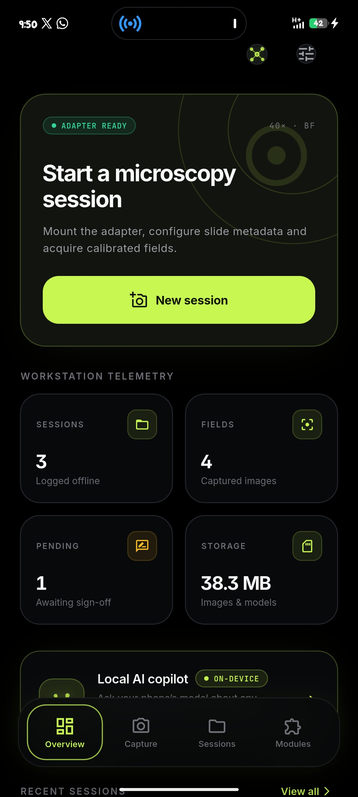
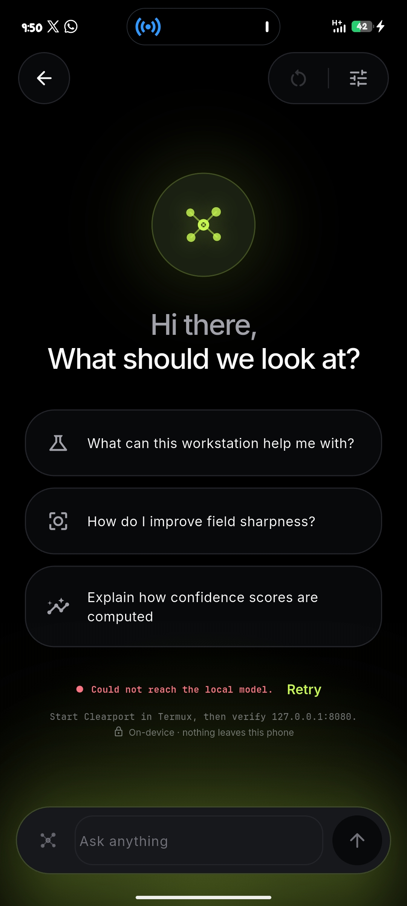
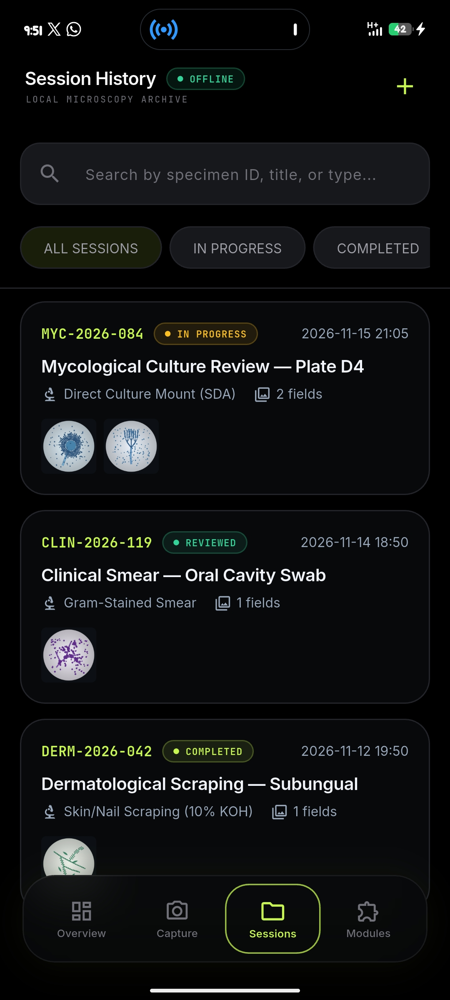
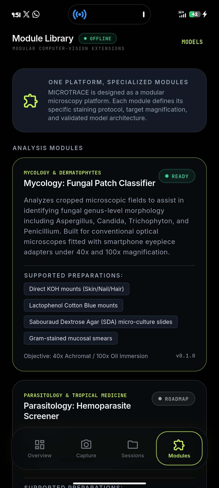
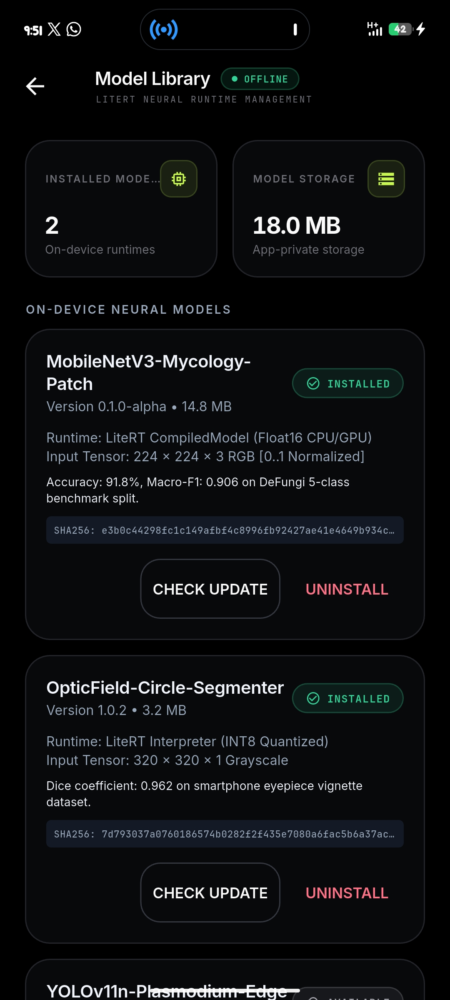
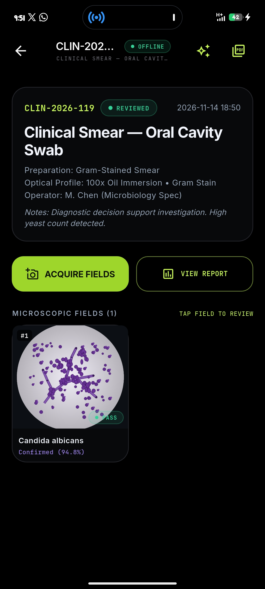

An offline-first Android microscopy workstation that extends conventional optical microscopes with smartphone-assisted capture, structured laboratory sessions and decision-support workflows.
Prepared as supporting evidence for the USPF Changemaker Challenge 2026.
Primary focus
Mycology and microscopy workflow support, with a modular path toward parasitology, malaria microscopy and cell analysis.
MICROTRACE is a working Flutter application prototype for smartphone-assisted microscopy. It organizes specimen metadata, microscopy sessions, captured fields, quality review, analysis stages, scientific review, model metadata and reporting in one instrument-like interface.
Many laboratories already have conventional optical microscopes but lack the budget, connectivity or infrastructure required for dedicated digital microscopy systems. A phone mounted over an eyepiece is a practical bridge: it preserves existing optics while adding a screen, image record and software layer.
This dossier distinguishes implemented interface and software pathways from clinical validation, field deployment and production model execution.
Important: the current image-analysis service is explicitly named MockLiteRTInferenceService in the repository. The UI models a LiteRT-style pipeline and stores simulated results; this is not presented as independently validated diagnostic inference.
A serious, offline-capable laboratory workstation prototype with a clear path to hardware integration, specialist model validation and practical evaluation.
MICROTRACE does not replace qualified microscopy interpretation. It is designed to make existing microscope work more structured, reviewable and extensible.
Digital microscopy can be constrained by the cost of dedicated cameras, proprietary viewers, network dependencies and specialist maintenance. In smaller facilities, a conventional microscope may be the durable asset already available; the missing layer is often a practical way to capture, organize, review and communicate what the operator sees.
The phone is a screen, camera, compute device and local record in one. The adapter is a relatively simple mechanical interface rather than a replacement for the microscope.
The application turns isolated images into traceable sessions with specimen codes, capture profiles, quality metrics, review states and report-ready summaries.
Context: peer-reviewed reports describe low-cost smartphone adapters and smartphone-connected microscopes as viable ways to capture microscope images in resource-limited settings, while also emphasizing operator technique and image quality.
The product concept is a chain in which each layer adds operational value. The repository implements the software workflow around this chain; physical adapter design, camera acquisition and field evaluation remain areas for refinement.
Capture fields through the phone-mounted microscope workflow and retain capture profile metadata.
Review field quality, notes, usability and recapture status before analysis.
Keep model outputs separate from scientific review and exportable observation reports.
The repository is organized as a Flutter application with a declarative GoRouter shell, Riverpod state notifiers, typed domain models, shared scientific UI components and service classes. The structure supports adding specialized microscopy modules without duplicating the workstation shell.
Flutter; flutter_riverpod for state; go_router for navigation; http for local AI transport; shared_preferences for persisted preferences; intl and uuid for formatting and identifiers.
Bundled fonts and microscopy assets are declared locally. The UI can run without a network; the optional assistant connects to loopback only. The current repository does not yet include a production database or camera plugin.
These supplied Android screenshots show the implemented product language and the breadth of the current workflow. Images are reproduced in full, without cropping, so the complete screen context remains visible.




The session repository currently seeds representative sessions in code, including mycology culture review, a Gram-stained oral cavity smear and a dermatological scraping. The evidence demonstrates the workflow and UI state; it is not evidence of clinical deployment.


Interpretation: model performance values shown in the prototype are repository-seeded display metadata. This dossier does not treat them as independently reproduced benchmarks or clinical accuracy evidence.
The code defines model and module metadata for a mycology patch classifier and a circular-field detector, with LiteRT runtime labels, input dimensions and checksums. The current analysis screen executes MockLiteRTInferenceService, which simulates preprocessing, quality gating, inference and posterior decoding before returning a flagged isSimulated result.
This is the right seam for future validated computer-vision models, but it is not yet a claim that production inference is running in this repository.
LocalAiService is an implemented HTTP client for an OpenAI-compatible server at loopback by default. It checks /models, streams chat completions, parses SSE/Ollama/plain-text formats, supports cancellation and surfaces connection errors.
The session context builder sends compact factual fields such as specimen metadata, quality metrics, top prediction, candidates and reviewer notes. It is assistance and explanation—not a microscopy classifier.
MICROTRACE’s offline-first posture is visible in both its interface and code. Screens expose offline status; the repository bundles fonts and sample microscopy assets; session, module and model state are represented locally; and the assistant’s network boundary is an explicitly configurable loopback endpoint.
The design principle is local-first: the core observation workflow should not wait for a server. Optional connectivity can later support updates, controlled transfer or shared review without becoming a prerequisite for basic operation.
Onboarding, dashboard, capture, sessions, review, analysis, results, reports, assistant, modules, models and settings are represented in the router and feature tree.
Verified in this working tree with flutter analyze; the command returned “No issues found!”.
Verified with flutter test; the suite completed with all tests passing.
The repository includes a GitHub Actions workflow that installs Flutter, formats and analyzes the code, runs tests, builds an Android APK and web bundle, and stages release artifacts. The workflow is evidence of an intended repeatable build process; it is not a substitute for device validation or a signed production release.
Current maturity: a coherent, test-backed product prototype with strong workflow definition and a credible integration seam for the next engineering phase.
The installed module is “Mycology: Fungal Patch Classifier”. The code and screenshots reference culture mounts, KOH mounts, lactophenol cotton blue, Gram-stained mucosal smears and morphology such as Aspergillus, Candida, Trichophyton and Penicillium.
Module metadata defines a modular route toward:
These are roadmap modules in the current repository. Their inclusion demonstrates platform extensibility, not completed diagnostic capability.
The practical value is not limited to classification: it is the combination of capture context, quality review, structured records, local assistance and human accountability.
| Workstream | Next phase | Evidence needed |
|---|---|---|
| Hardware integration | Adapter fit, camera acquisition, focus guidance, field calibration and image capture on representative Android phones. | Device compatibility matrix, repeatable capture procedure and image-quality checks. |
| Computer vision | Replace simulated inference with packaged, versioned LiteRT models and a reproducible preprocessing pipeline. | Dataset governance, held-out evaluation, error analysis and model provenance. |
| Local records | Move from seeded in-memory repositories to durable local image and specimen storage with export/backup controls. | Retention, recovery, audit and privacy review. |
| Laboratory evaluation | Observe workflow use with qualified personnel in controlled, non-diagnostic evaluation settings. | Usability findings, protocol adherence, review time and failure modes. |
| Model management | Define signed model packages, compatibility checks, update policy and rollback behavior. | Checksums, release notes, device testing and safe update procedure. |
| Governance | Clarify intended use, limitations, training materials and quality-management alignment for each module. | Module-specific SOPs, review responsibilities and regulatory assessment. |
Strategic direction: enhance and validate an existing platform rather than restart from an idea. The next milestone is practical evidence: real images, real devices, real operators and clearly bounded claims.
[1] Android Developers. “Build an offline-first app.” Official architecture guidance on local data sources, queued writes, synchronization and exposing local state. developer.android.com/topic/architecture/data-layer/offline-first.
[2] Google AI Edge. “LiteRT for Android” and “Getting started with LiteRT.” Official documentation for on-device inference, CompiledModel/Interpreter APIs and CPU/GPU/NPU deployment. developers.google.com/edge/litert/android; developers.google.com/edge/litert/overview.
[3] P. S. et al. “Open-source Smartphone Adapter in Digital Photomicrography.” Journal of Clinical Imaging Science, 2022. Reports a low-cost adapter reducing focusing time compared with free-hand capture while producing comparable image quality. PMC9012408.
[4] S. et al. “Development of a Low-cost Smartphone-connected Digital Microscope.” Journal of Microscopy and Ultrastructure, 2020. Describes a low-cost smartphone-connected microscope capable of capturing and storing microscopic images and video. PMC7365514.
[5] World Health Organization. Malaria Microscopy Quality Assurance Manual, Version 2. Guidance on slide quality, internal quality control, staff review and laboratory quality systems. who.int/publications/b/31365; Version 2 PDF.
[6] MICROTRACE repository. Adams-404/microtrace. Source of truth for the implementation claims in this dossier: github.com/Adams-404/microtrace.
The external sources establish why smartphone-assisted microscopy, offline-first data design, on-device inference and human review are relevant engineering and laboratory considerations. They do not establish MICROTRACE’s clinical performance, deployment or diagnostic accuracy.
The project is available as an open repository with source, tests, assets and a release workflow that can be inspected and extended.
Flutter source tree · tests · GitHub Actions release workflow · bundled fonts and microscopy assets · supplied Android screenshots.
Research and laboratory decision-support prototype. Not a certified in-vitro diagnostic device and not a replacement for professional examination.
Prepared for USPF Changemaker Challenge 2026 · Technical evidence dossier · Version 1.0